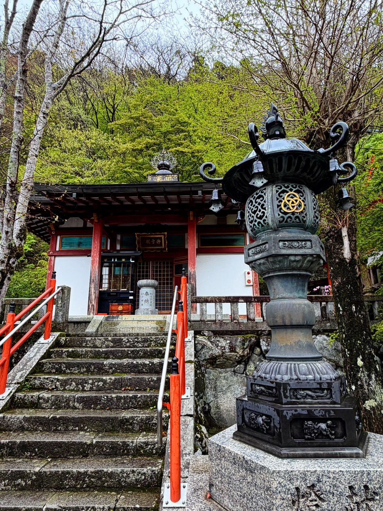
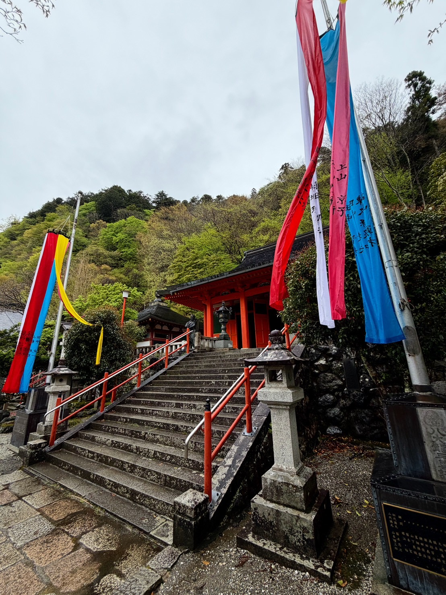
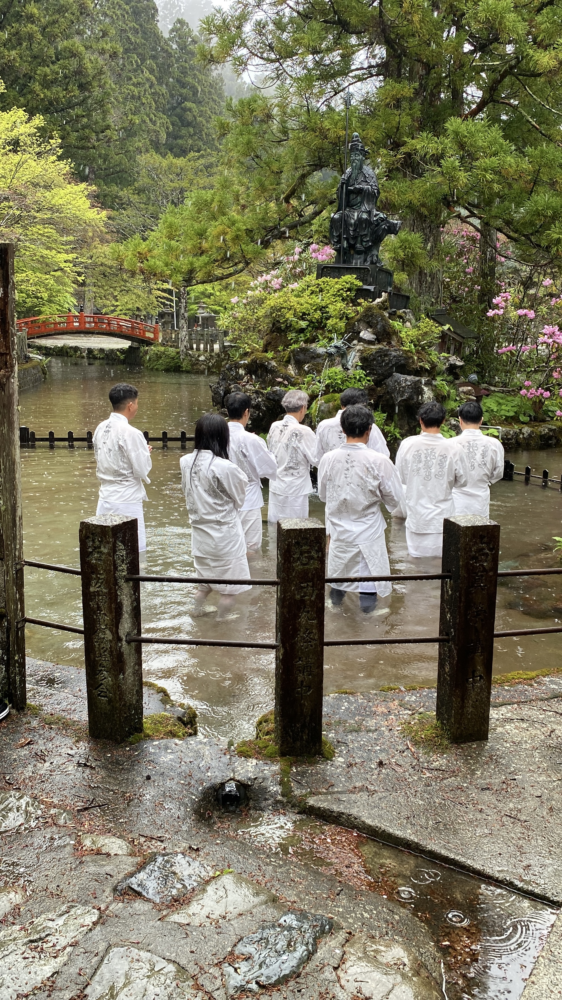
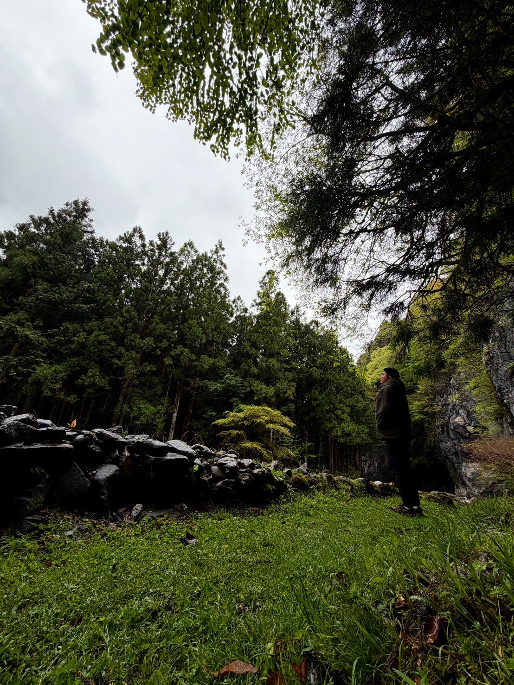
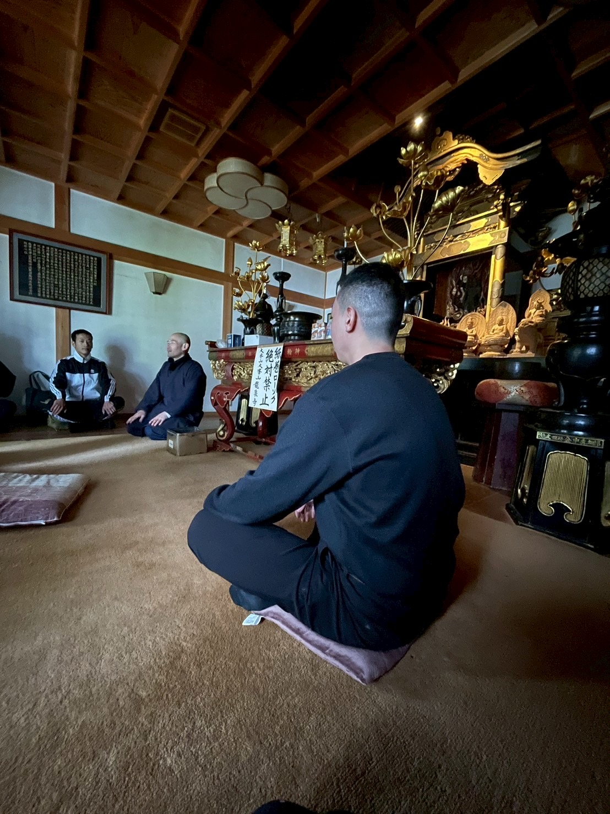
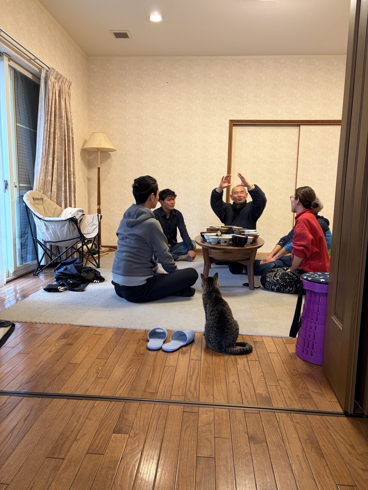
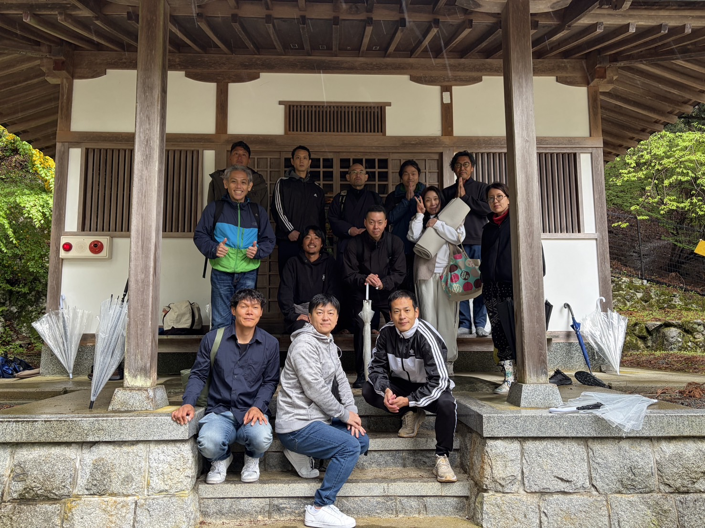
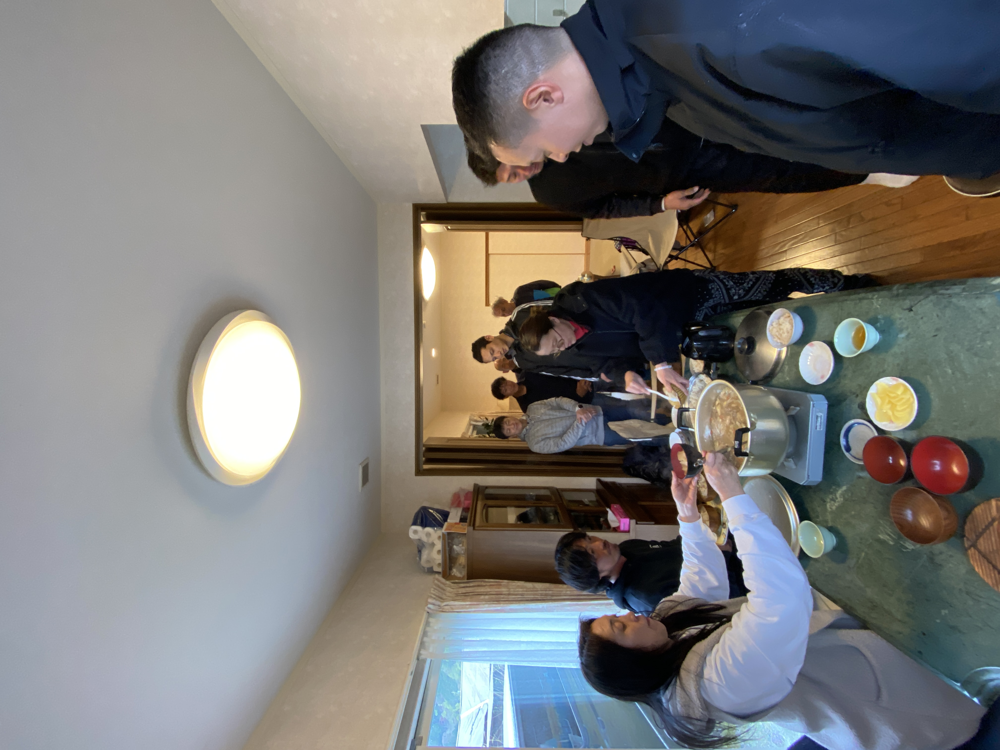
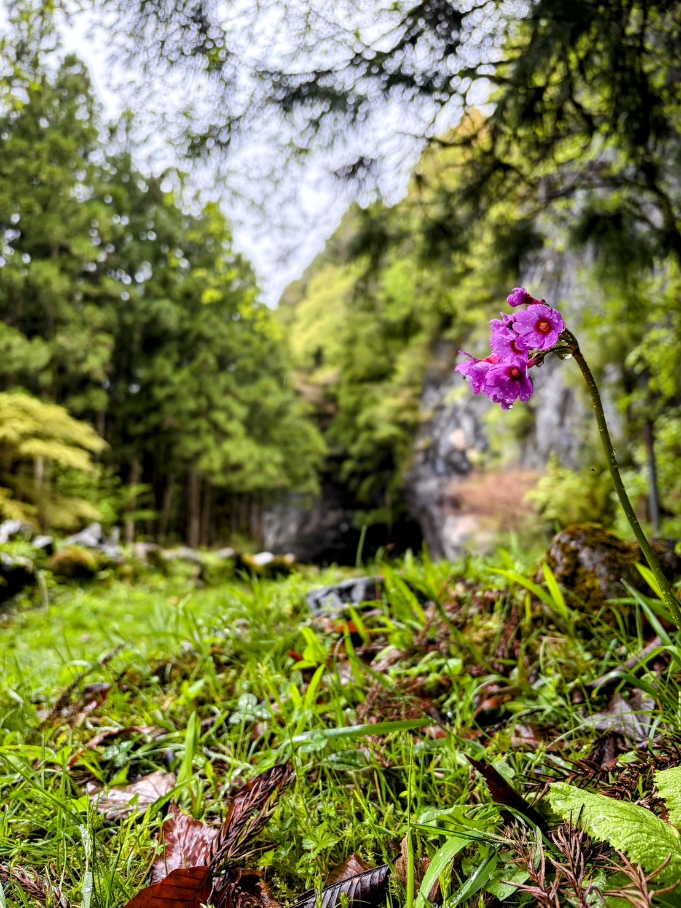

Zazen Community
座禅会へ参加してくださった皆さまへ



裸足で境内に立ち、行衣をまとい、池の水に入っていく。冷たい。でも、どこかで「ああ、これだ」と思う感覚がある。
役行者像を前に、みんなで水に入る。雨が降っていても、寒くても、不思議と清々しい気持ちになっていきます。

修験道の開祖が、何百年も前に座った場所。その洞窟の中で、みなさんと座禅をします。
場に染み込んだ時間の重みが、言葉より先に働きます。頭で理解する前に、身体が何かを受け取っています。
入力内容は保存されません。書くことで、自分の中で整えるための余白です。

あなたの一言が、次に読む誰かの記憶を呼び起こします。写真、感想、SNS投稿があればLINEグループに送ってください。いただいた声は、少しずつこのページに重ねていきます。
同じ一日を過ごしていても、残っている景色は一人ひとり少しずつ違います。LINEグループに届いた写真や、みなさんが見ていた瞬間も、ここに少しずつ加えていきます。


不思議なんですが、この一杯が言葉では言い表せないほど深くおいしい。
五感が研ぎ澄まされた状態で食べるから、素朴な玄米と豚汁が、そのままぜんぶ体に入ってくる。ご住職を囲んで、みんなで箸を動かす。猫が庭から入ってくる。笑い声が混じる。

豚汁をいただきながら、今日感じたことをぽつぽつ話す時間。ひみもそこにいて、場の空気をふっとやわらかくしてくれました。
座禅会で感じたことは、時間とともに薄れていきます。日常に戻ると、元の判断のクセに引っ張られます。
準備中です。詳細が決まり次第、このページでお知らせします。

また会いましょう。
あの静けさの向こうに、
あなたの使命があります。
ここに集まるご縁が、
それぞれの道を照らし合っていきますように。
天川村が、あなたの「還る場所」に
なっていくことを願っています。
前田 薫